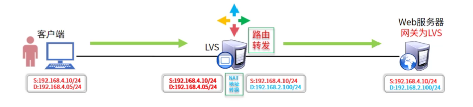
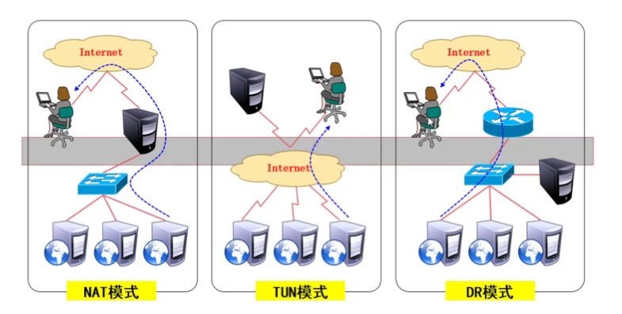
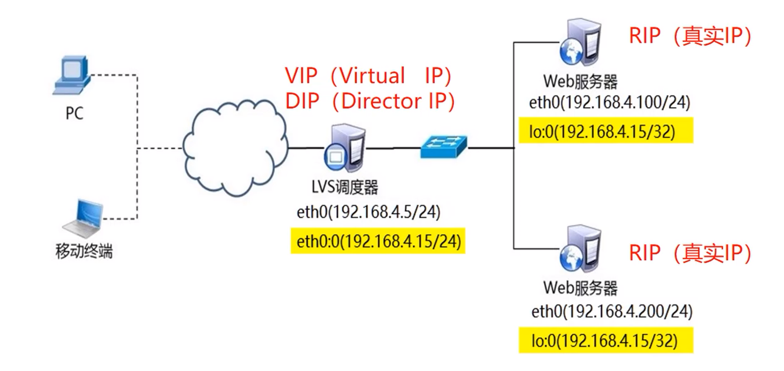

LVS集群
LVS集群简介
什么是集群
- 通过网络将很多服务器集中在一起，提供同一种服务，在客户端看起来就好像只有一个服务器
任务调度是集群系统中的核心技术
集群的目的
提高性能如计算密集型应用，如：天气预报、核试验模拟
降低成本相对百万美元级的超级计算机，价格便宜
提高可扩展性只要增加集群节点即可
增强可靠性多个节点完成相同功能，避免单点失败
集群分类
高性能计算集群HPC
通过以集群开发的并行
应用程序，解决复杂的科学问题负载均衡集群LB
客户端负载在计算机集群中尽可能
平均分摊高可用集群HA
避免单点故障，当一个系统发生故障时，可以快速迁移
LVS概述
- Linux虚拟服务器（LVS）是章文嵩在国防科技大学就读博士期间创建的
- LVS可以实现高可用的、可伸缩的Web、Mail、Cache和Media等网络服务
- 最终目标是利用Linux操作系统和LVS集权软件实现一个高可用、高性能、低成本的服务器应用集群
LVS术语
Director Server：调度服务器
将负载分发到Real Server的服务器
Real Server：真实服务器
真正提供应用服务的服务器
VIP：虚拟IP地址
公布给用户访问的虚拟IP地址
DIP：调度器连接节点服务器的IP地址
RIP：真实IP地址
集群节点上使用的IP地址
LVS-NAT图示

LVS相当于路由器，需要配置网关
不使用LVS时，会一层一层封装再解封装，效率很慢
LVS工作模式

VS/NAT
通过网络地址转换实现的虚拟服务器
大并发访问时，调度器的性能成为瓶颈
VS/DR
直接使用路由技术实现虚拟服务器
节点服务器需要配置VIP，注意MAC地址广播
VS/TUN
通过隧道方式实现虚拟服务器
负载均衡调度算法
LVS目前实现10种调度算法
常用的调度算法
轮询（Round Robin）
加权轮询（Weighted Round Robin）
最少连接（Least Connections）
加权最少连接（Weighted Least Connections）
源地址哈希（Source Hash）
其他调度算法
基于局部性的最少连接
带复制的基于局部性最少连接
目标地址散列（Destination Hashing）
最短的期望的延期
最少队列调度
LVS-NAT模式
节点规划
| 节点 | 角色 | IP地址 |
|---|---|---|
| lvs | LVS调度器 | ens33:192.168.1.10 ens34:192.168.157.10 |
| web1 | Web服务器 | ens34:192.168.1.21 |
| web2 | Web服务器 | ens34:192.168.1.22 |
准备web服务器
- web1部署web服务
1 | [root@web1 ~]# yum install httpd -y |
- web2部署web服务
1 | [root@web2 ~]# yum install httpd -y |
安装ipvsadm软件包
- 管理内核的工具
1 | [root@lvs ~]# yum install ipvsadm -y |
创建虚拟服务器
- -A 添加虚拟服务器
- -t/-u 设置集群地址（VIP、Virtual IP）tcp/udp
- -s 指定负载调度算法（rr|wrr|lc|wlc|sh…）
1 | [root@lvs ~]# ipvsadm -A -t 192.168.157.10:80 -s rr |
添加real server
添加、删除服务器节点
-a 添加真实服务器
-d 删除真实服务器
-r 指定真实服务器（real Server）的地址
-m 使用NAT模式
-g 使用DR模式（默认）
-i 使用TUN模式
-w 为节点服务器设置权重，默认为1
1 | [root@lvs ~]# ipvsadm -a -t 192.168.157.10:80 -r 192.168.1.21:80 -m |
开启路由转发
- 开启路由
1 | [root@lvs ~]# echo "net.ipv4.ip_forward = 1" >> /etc/sysctl.conf |
- 关闭防火墙和SElinux
1 | [root@lvs ~]# iptables -F |
给后端web服务器配置网关
- web1配置网关
1 | [root@web1 ~]# nmcli connection modify ens33 ipv4.method manual ipv4.gateway 192.168.1.10 |
- web2配置网关
1 | [root@web2 ~]# nmcli connection modify ens33 ipv4.method manual ipv4.gateway 192.168.1.10 |
浏览器访问测试
- 通过访问VIP 192.168.157.10
- Ctrl+F5强制刷新
- 可以看到在192.168.1.21和192.168.1.22之间切换
LVS-DR模式

（为方便使用1网段）
准备调度器网络环境
- 配置VIP（同一网卡）
1 | [root@lvs ~]# cp /etc/sysconfig/network-scripts/ifcfg-ens33{,:0} |
准备web服务器
- web1部署web服务
1 | [root@web1 ~]# yum install httpd -y |
- web2部署web服务
1 | [root@web2 ~]# yum install httpd -y |
准备web网络环境
web1和web2做相同操作，以web1 为例
伪装VIP
1 | [root@web1 ~]# cp /etc/sysconfig/network-scripts/ifcfg-lo{,:0} |
不要立刻重启网络服务,会产生地址冲突忽略地址冲突
1 | [root@web1 ~]# vim /etc/sysctl.conf |
创建LVS-DR集群
安装ipvsadm软件包
- 管理内核的工具
1 | [root@lvs ~]# yum install ipvsadm -y |
创建虚拟服务器
- -A 添加虚拟服务器
- -t/-u 设置集群地址（VIP、Virtual IP）tcp/udp
- -s 指定负载调度算法（rr|wrr|lc|wlc|sh…）
1 | #清空所有集群 |
添加real server
添加、删除服务器节点
-a 添加真实服务器
-d 删除真实服务器
-r 指定真实服务器（real Server）的地址
-m 使用NAT模式
-g 使用DR模式（默认）
-i 使用TUN模式
-w 为节点服务器设置权重，默认为1
1 | [root@lvs ~]# ipvsadm -a -t 192.168.1.15:80 -r 192.168.1.21:80 -g |
开启路由转发
- 开启路由
1 | [root@lvs ~]# echo "net.ipv4.ip_forward = 1" >> /etc/sysctl.conf |
- 关闭防火墙和SElinux
1 | [root@lvs ~]# iptables -F |
浏览器访问测试
- 通过访问VIP 192.168.1.15
- Ctrl+F5强制刷新
- 可以看到在192.168.1.21和192.168.1.22之间切换